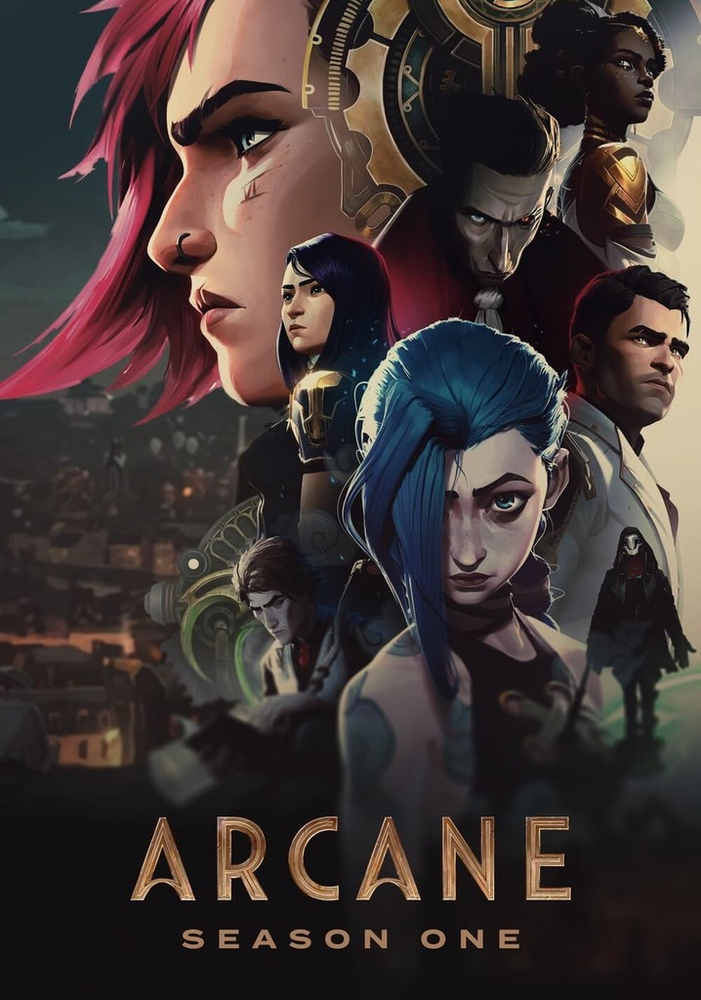

⊹✧.🎀⋆˖ Trailer e Sinopse🎥˚˖𓍢ִ🌷͙֒✩₊˚

SINOPSE ⊳
Em meio ao conflito entre as cidades-gêmeas
de Piltover e Zaun, duas irmãs lutam em lados opostos
de uma guerra entre tecnologias mágicas
e convicções incompatíveis. Assista o quanto quiser. Baseada no universo de League of Legends,
e com as vozes de Hailee Steinfeld e Kevin Alejandro na versão original.
QUANTAS TEMORADAS ARCANE VAI TER? ⊳
Desde o começo, quando começamos a trabalhar nesse projeto, nós tínhamos um fim
específico em mente, o que significa que a história de 'Arcane' encerrará nesta 2ª temporada. Mas 'Arcane' é apenas a primeira de muitas
histórias que queremos contar em Runeterra
